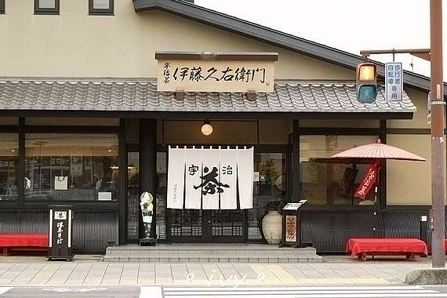

- 大阪 -
Day1
機場 -> 機場outlet -> 心齋橋&道頓堀 -> 難波八阪神社


Day2
梅田藍天大廈 -> 黑門市場
梅田藍天大廈
黑門市場

Day3
環球影城一整天
環球影城

Day4
阿倍野 -> 通天閣&新世界 -> 以下在選個景點
阿倍野

通天閣

新世界本通商店街

唐吉軻德
四天王寺
大阪城公園
法善寺橫丁

大阪天滿宮
- 京都 -
Day5
祇園八坂神社

伏見稻荷
清水寺

錦市場
- 宇治 -
平等院
平等院表參道
宇治神社
伊藤久右衛門

中村藤吉
抹茶共和國